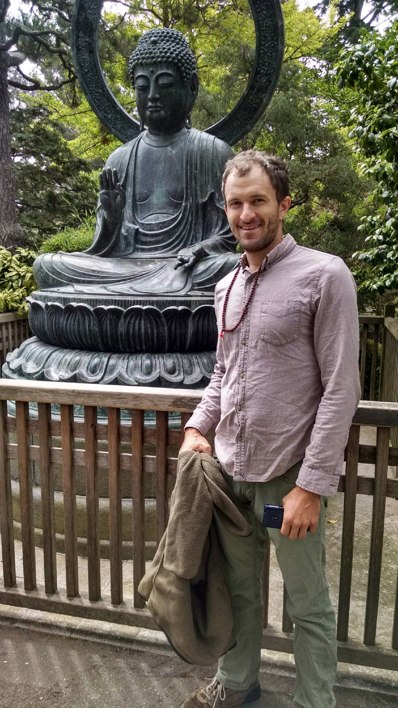

Long-time Austin resident with an eye toward a sustainable future where technology helps us achieve a peaceful and informed society. I love to create beautiful things that help uplift, inspire and educate, while maintaining a stylish and professional appearance. Specialties include Front-end Web Development, Git-hub and JavaScript. Related-skills include analog illustration, acrylic painting, and foreign languages (Spanish, Japanese.) When I'm not busting my ass on projects, I love to hike/camp, drink coffee and travel to Mexico and Japan.

Golden Gate Park San Francisco